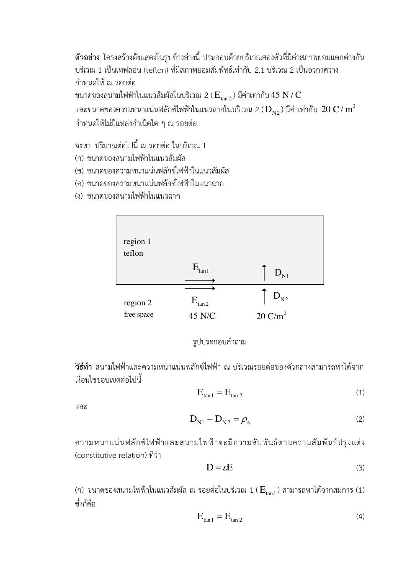
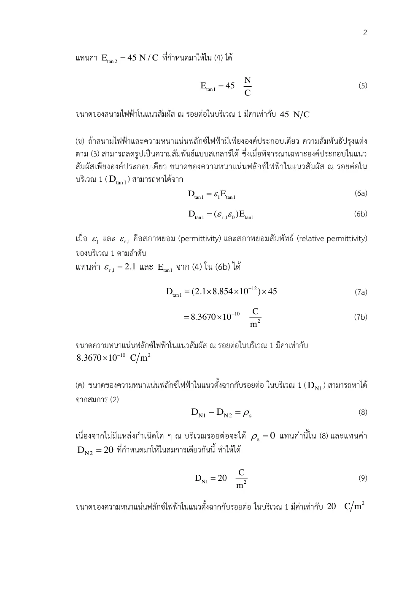
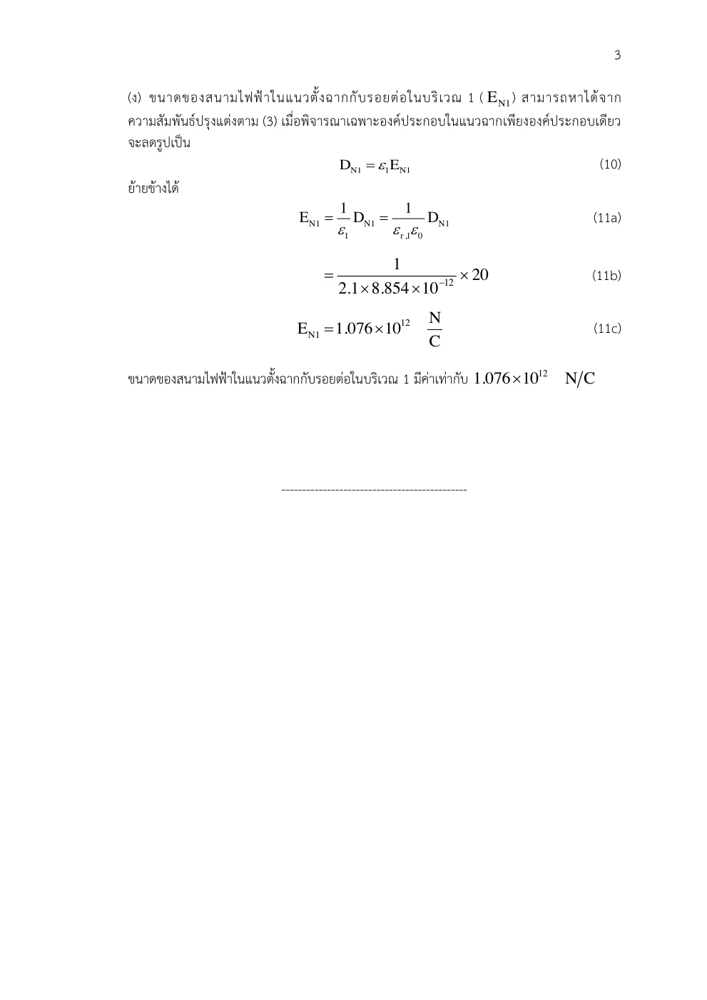

01 สูตรทั่วไปสองกฎ
∮CE • dl=0; ∯SD • ds=Qfree,enc
เหตุใดจึงแปลงรูปเช่นนี้? ใช้ไฟฟ้าสถิตและกำหนดปกติร่วม n จากตัวกลาง 1 ไป 2 ก่อนเลือกวงและผิว
Boundary Conditions · Hayt §5.8 D5.9–D5.10; Sadiku §5.9
สนามเปลี่ยนทิศและขนาดเมื่อผ่านรอยต่อได้อย่างไรโดยไม่ละเมิดกฎสนาม?
สนามที่รอยต่อไม่สามารถกระโดดแบบเลือกเอง เพราะวงงานเล็กและกล่องฟลักซ์เล็กต้องรักษากฎสนาม หากสนามสัมผัสสองฝั่งต่างกัน วงที่บางจนแทบไม่มีพื้นที่จะยังมีงานสุทธิ ซึ่งขัดกับไฟฟ้าสถิต
ในตัวนำสมดุล ประจุอิสระจะเคลื่อนทันทีหากมี E ตามผิว แล้วสะสมจนส่วนสัมผัสหายไป ตัวนำจึงเป็นผิวศักย์คงที่และสนามภายนอกตั้งฉากผิว หากยังมีกระแสในตัวนำจริง เงื่อนไขสนามภายในศูนย์ของไฟฟ้าสถิตใช้ไม่ได้
ส่วนปกติของ D กระโดดได้เท่าประจุอิสระบนรอยต่อ แต่ E ปกติไม่จำเป็นต้องเท่ากัน เมื่อไม่มีประจุผิว D ปกติต่อเนื่องและตัวกลางที่ ε ต่ำกว่ามี E ปกติสูงกว่า
ขอบเขตแบบจำลอง: ไฟฟ้าสถิต รอยต่อเรียบเฉพาะที่ สนามจำกัด วัสดุเชิงเส้นไอโซทรอปิก ปกติร่วมในพิสูจน์ชี้ 1 → 2; ข้อ ALL-Q02 เลือก 2 → 1 จึงใช้ผลต่างกลับลำดับ
เหตุใดจึงแปลงรูปเช่นนี้? ใช้ไฟฟ้าสถิตและกำหนดปกติร่วม n จากตัวกลาง 1 ไป 2 ก่อนเลือกวงและผิว
เหตุใดจึงแปลงรูปเช่นนี้? ด้านยาวเดินสวนกันจึงติดลบ ส่วนด้านสั้นแปรตามความสูง Δh เมื่อสนามมีค่าจำกัด
เหตุใดจึงแปลงรูปเช่นนี้? วงบางสามารถหันตามทิศสัมผัสใดก็ได้ จึงเท่ากันทั้งองค์ประกอบสัมผัส
เหตุใดจึงแปลงรูปเช่นนี้? ฝาบนชี้ +n และฝาล่าง −n ด้านข้างหายเมื่อกล่องบาง แต่ประจุผิวยังคงเท่ากับ ρsΔS
เหตุใดจึงแปลงรูปเช่นนี้? ตัวห้อยต้องสอดคล้องกับปกติร่วม หากเลือก n จาก 2 ไป 1 ต้องกลับลำดับผลต่างด้วย
เหตุใดจึงแปลงรูปเช่นนี้? ใช้ส่วนสัมผัสเดียวกันและ D ปกติต่อเนื่อง มุมวัดกับปกติจึงได้อัตราส่วนนี้ หากวัดกับผิวอัตราส่วนกลับ
เหตุใดจึงแปลงรูปเช่นนี้? เลือกปกติออกจากตัวนำเข้าสู่ฉนวน สนามภายนอกเหลือแต่ส่วนปกติ ประจุผิวบวกให้สนามออก
เหตุใดจึงแปลงรูปเช่นนี้? ต้นฉบับเลือกปกติจาก 2 ไป 1 แต่ประจุผิวเป็นศูนย์จึง Dn เท่ากัน รักษาหน่วย C/m² แม้สนามสูงมาก
เขียนสูตรทั่วไป → ระบุพิกัดและทิศ → วิเคราะห์ด้วยมือ → ใช้ขอบเขต → ตรวจหน่วย SI และความหมาย
จุดต่อฉนวนกับอากาศในหม้อแปลงอาจเพิ่มสนามในอากาศ เพราะ ε ต่ำกว่า นี่เป็นเหตุผลที่งานออกแบบต้องลดช่องว่างและพิจารณารูปร่างขอบอิเล็กโทรด
รอยต่อชั้นฉนวนในสายกำลังและอุปกรณ์แรงสูงใช้สองเงื่อนไขนี้เพื่อแจกแจงสนามก่อนประเมินการทะลุฉนวน ค่าใน ALL-Q02 เป็นแบบฝึกตามต้นฉบับ ไม่ใช่ค่าปลอดภัยของเทฟลอน
ลองอธิบายด้วยคำของตนเอง: เมื่อไม่มีประจุผิวและ ε₂=2ε₁ ส่วน E ปกติและสัมผัสด้าน 2 เปลี่ยนจากด้าน 1 อย่างไร?
ปรับ εr2 โดยตรึงสนามฝั่ง 1 และไม่มีประจุผิว ดูลูกศรหักเหจริง: ส่วนสัมผัสเท่าเดิม ส่วนปกติหารด้วย εr2
ก่อนปรับ: ทำนายทิศและขนาด · หลังปรับ: อธิบายด้วยสมการและเงื่อนไข
แนวคิดของบทนี้เป็นฐานให้ Set 13, Set 14, Set 19
เลขหน้าทั้งหมดนับหน้า PDF รวมปก ตำราเป็นแหล่งตรวจวิธีและนิยาม ไม่ได้กล่าวว่าข้อมูลทุกตัวอย่างตรงกับข้อสอบ บทอธิบายและการพิสูจน์ด้านบนเรียบเรียงเพื่อการสอน
ใช้วงปิดบางคร่อมรอยต่อพิสูจน์ความต่อเนื่องของสนามแนวสัมผัส และใช้กล่องเกาส์บางพิสูจน์การกระโดดของฟลักซ์แนวปกติ สมการเชิงจุดต้องใช้ภายในแต่ละตัวกลาง; ณ รอยต่อใช้รูปอินทิกรัลเพื่อรองรับประจุผิว
อ่าน สไลด์หลัก · หน้า PDF 1 ควบคู่กับคำอธิบายด้านล่าง เพื่อเทียบรูปและลำดับสมการ
กำหนดเวกเตอร์ปกติชี้จากบริเวณ 2 ไปบริเวณ 1 จึงได้ Dn1 − Dn2 = ρs ใช้ปกติเดียวกันเมื่อแยกทั้งสองสนาม อย่าสรุป En ต่อเนื่องเมื่อ ε ต่างกัน และอย่าสรุป Dt ต่อเนื่อง
วงบางคร่อมรอยต่อมีด้านยาว Δw และสูง Δh เมื่อ Δh → 0 งานบนด้านสั้นหายไป ด้านยาวเดินสวนกัน
กล่องเกาส์บางมีฝาบนปกติ +an และล่าง −an ฟลักซ์ด้านข้างหายไปแต่ประจุผิวยังคงอยู่
ถ้า ρs = 0 ได้ ε1 En1 = ε2 En2 เมื่อมุม θ วัดจากปกติ tan θ = Et/En จึงได้ tan θ1/tan θ2 = ε1/ε2 อย่าวัดมุมจากผิวแล้วใช้สูตรนี้
| สัญลักษณ์ | ความหมาย / คำอ่าน | SI |
|---|---|---|
| Et | องค์ประกอบสนามแนวสัมผัส | V/m |
| Dn | องค์ประกอบฟลักซ์แนวปกติแบบมีเครื่องหมาย | C/m² |
| ρs | ประจุอิสระเชิงผิว | C/m² |
| ε1, ε2 | สภาพยอมสองตัวกลาง | F/m |
แสดง 27 หน้า
แต่ละรายการเรียบเรียงภาษาไทย พร้อมภาพต้นฉบับหน้าเดียวกัน ภาพคงรูปเวกเตอร์และลำดับการพิสูจน์ของอาจารย์ เปิดเฉพาะหน้าที่ต้องการอ่าน
| สัญลักษณ์ | คำอ่านและความหมาย | SI |
|---|---|---|
| x,y,z; r,ρ; θ,ϕ | เอ็กซ์ วาย แซด; อาร์ โร; ทีตา ไฟ · พิกัดและมุม | m; m; rad |
| E, D; H, B | อี ดี; เอช บี · สนามและฟลักซ์ไฟฟ้า/แม่เหล็ก | V/m, C/m²; A/m, T |
| J, K; ρv, ρs | เจ เค; โรซับวี โรซับเอส · กระแสปริมาตร/ผิวและประจุปริมาตร/ผิว | A/m², A/m; C/m³, C/m² |
| ε, μ, σ; εr, μr | เอปไซลอน มิว ซิกมา · สภาพยอม ความซาบซึมได้ สภาพนำ; ค่าสัมพัทธ์ | F/m, H/m, S/m; ไม่มีหน่วย |
| P, χe | พี ไคซับอี · โพลาไรเซชันและความไวทางไฟฟ้า | C/m², ไม่มีหน่วย |
| I, Q, q; V, V0 | ไอ คิว คิว; วี วีซับศูนย์ · กระแส ประจุรวม/ย่อย ศักย์/แรงดันกำหนด | A, C, C; V, V |
| C, W; S, A; d,L | ซี ดับเบิลยู; เอส เอ; ดี แอล · ความจุ พลังงาน พื้นที่ ระยะห่าง ความยาว | F, J; m², m²; m,m |
| A, Φ | เอ ไฟตัวใหญ่ · ศักย์เวกเตอร์แม่เหล็กและฟลักซ์ | Wb/m, Wb |
| ω, f, λ; k, η | โอเมกา เอฟ แลมบ์ดา; เค อีตา · ความถี่เชิงมุม ความถี่ ความยาวคลื่น เลขคลื่น อิมพีแดนซ์ | rad/s, Hz, m; rad/m, Ω |
| v, t; dl, ds, dv | วี ที; ดีแอล ดีเอส ดีวี · ความเร็ว เวลา ส่วนย่อยความยาว ผิว ปริมาตร | m/s, s; m,m²,m³ |
| an, j; ∇, ∇2 | เอซับเอ็น เจ; เดล ลาปลาเซียน · เวกเตอร์หน่วย หน่วยจินตภาพ ตัวดำเนินการพื้นที่ | ไม่มีหน่วย; ต่อระยะทางและระยะทาง² |
| Es, Hs | อีซับเอส เอชซับเอส · เฟสเซอร์เชิงอวกาศ | V/m, A/m |
องค์ประกอบสนามมีหน่วยเดียวกับสนาม ตัวห้อย t,n คือสัมผัสและปกติ ตัวห้อย 1,2 คือตัวกลาง ไพรม์ระบุแหล่งกำเนิด a ที่เป็นค่าคงตัวจากการอินทิเกรตมีหน่วยตามสมการที่ใช้; a ที่เป็นเวกเตอร์หน่วยไม่มีหน่วย
ให้ εr1 = 2.1, εr2 = 1, ρs = 0, Et2 = 45 V/m และ Dn2 = 20 C/m2 จงหา Et1, Dt1, Dn1 และ En1 กำหนดปกติร่วมชี้จากตัวกลาง 2 ไป 1
ALL-Q02 · ตัวอย่างขอบเขต · เรียบเรียงจากไฟล์จริง · Set 12 พร้อมเฉลย · หน้า PDF 1 · ชุดโจทย์เดิม · หน้า PDF 4 · Hayt D5.9–D5.10 · วิธีรอยต่อ (คนละข้อมูล) · หน้า PDF 151
ทำไมจึงทำขั้นนี้? เงื่อนไขสัมผัสมาจากวง E ส่วนปกติมาจากเกาส์ของ D
ทำไมจึงทำขั้นนี้? ด้านยาวของวงเดินสวนกัน ด้านสั้นหายเมื่อความสูงเข้าใกล้ศูนย์ในสนามจำกัด
ทำไมจึงทำขั้นนี้? ใช้ปกติร่วมจาก 2 ไป 1 ตามโจทย์ ฝาด้าน 1 ชี้ตามปกติ ฝาด้าน 2 ชี้สวนปกติ ด้านข้างหายเมื่อกล่องบาง
ทำไมจึงทำขั้นนี้? ส่วนสัมผัส E เท่ากัน แต่ D ต่างตาม ε
ทำไมจึงทำขั้นนี้? ไม่มีประจุผิวทำให้ D ปกติเท่ากัน ไม่บังคับ E ปกติเท่ากัน
ค่า 20 C/m2 เป็นค่าที่ต้นฉบับกำหนด จึงให้สนามสูงมาก ห้ามเปลี่ยนเป็น nC/m2 เอง ฟลักซ์ปกติเท่ากันแต่สนามปกติหารด้วย ε ต่างกัน
ทำไมจึงทำขั้นนี้? ต้องรักษาหน่วย C/m² ที่โจทย์กำหนด ค่าใหญ่ไม่ใช่เหตุให้แก้เป็น nC/m²
บริเวณ 1: z < 0, εr1 = 3.2; บริเวณ 2: z > 0, εr2 = 2 ไม่มีประจุผิว ให้ D1 = −30ax + 50ay + 70az nC/m2 จงหา D2
Drill ตำรา: เลือกส่วนที่อยู่ในขอบเขต · Hayt D5.9–D5.10 · หน้า PDF 151 · Set 12 · สูตรพื้นฐานที่เกี่ยวข้อง · หน้า PDF 10 · Set 12 · เงื่อนไข D ปกติ · หน้า PDF 20
ทำไมจึงทำขั้นนี้? สัมผัส E ต่อเนื่อง ส่วนปกติ D ต่อเนื่องเมื่อไม่มีประจุผิว
เลือกปกติร่วม −az ตามคอนเวนชัน 2 → 1; องค์ประกอบปกติทั้งสองจึงเป็น −70 nC/m² ในการเขียนสเกลาร์ แต่เวกเตอร์แนว z เป็น +70az ทั้งสองด้าน
ทำไมจึงทำขั้นนี้? ประกาศปกติร่วมแล้วแยกเวกเตอร์เป็นปกติกับสัมผัส
ทำไมจึงทำขั้นนี้? D สัมผัสเปลี่ยนตามอัตราส่วน ε2/ε1 เพราะ E สัมผัสเท่ากัน
ตรงกับคำตอบ Hayt D5.10(c); อย่าขยาย ε2/ε1 ไปคูณองค์ประกอบปกติ
ทำไมจึงทำขั้นนี้? รวมส่วนสัมผัสใหม่กับส่วนปกติเดิม ห้ามคูณอัตราส่วนทั้งเวกเตอร์
เลื่อนพารามิเตอร์เพื่อดูแนวโน้มและเครื่องหมาย แล้วกลับไปพิสูจน์ด้วยสูตรตั้งต้นในตัวอย่าง
ตัวอย่างเพิ่มเติม โน้ต และภาพลายมือแสดงเป็นหน้าต้นฉบับเรียงลำดับ ใช้คำอธิบายและวิธีทำในบทนี้ประกอบ
เขียนเงื่อนไขทั่วไปของ Et และ Dn ก่อนใช้ ρs = 0

หา Et1 = 45 V/m และ Dt1 = ε1Et1 = 8.36703×10⁻¹⁰ C/m²

Dn1 = 20 C/m² ตามต้นฉบับ หาร ε1 ให้ En1 ระวังหน่วยไม่ใช่ nC/m²
